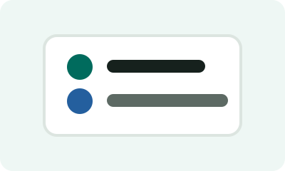
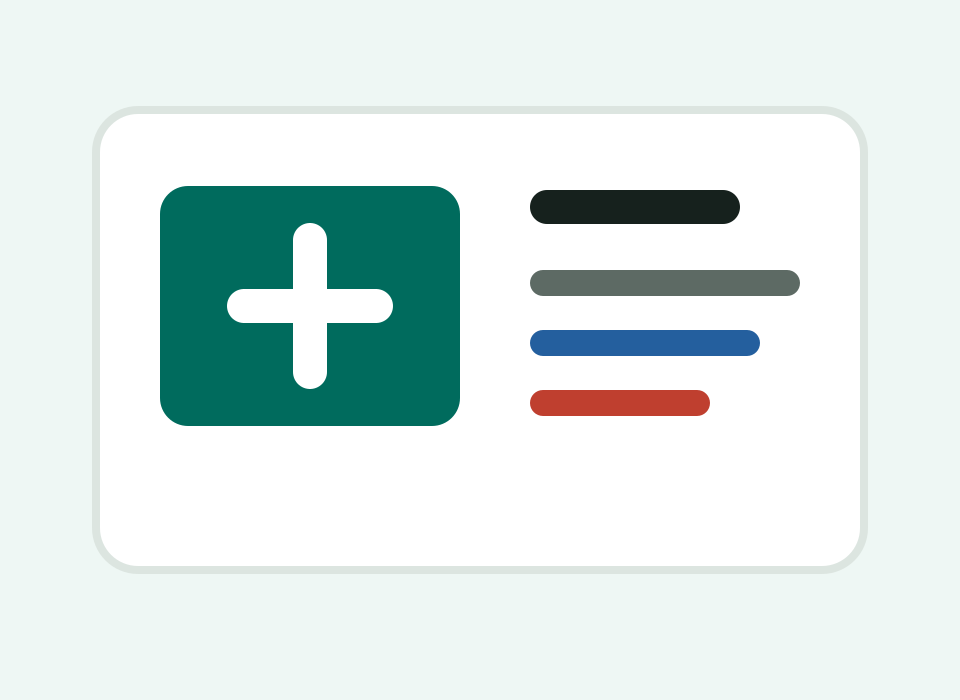
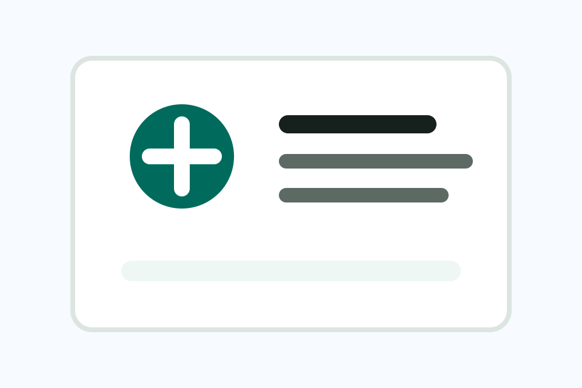
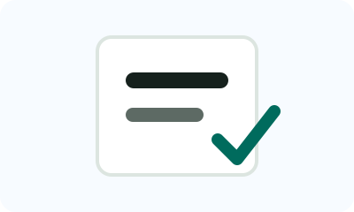
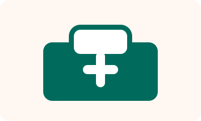

Prometric-Style MCQs
System-based practice questions with rationales for UAE EMS licensure preparation.
Read moreUAE paramedic licensure preparation
Prepare for EMT, Paramedic, and Advanced Care Paramedic pathways with practice questions, mock exams, study materials, and guidance for UAE licensure processes.
Independent exam-preparation platform. Not an official Pearson VUE, DOH Abu Dhabi, or UAE government website.

Online study materials

About us
UAE Paramedic Ready is designed for EMS learners preparing for computer-based licensure exams and professional opportunities in the UAE. The platform combines MCQ practice, exam-mode testing, topic-based study, and career guidance for prehospital care professionals.
Read MoreOur services

System-based practice questions with rationales for UAE EMS licensure preparation.
Read more
Study pathway, document awareness, exam booking overview, and preparation planning.
Read more
Explore ambulance, hospital, industrial, event, and remote-site EMS roles in the UAE.
Read moreProducts
Blogs
Understand eligibility, study planning, CBT practice, and document readiness.
Read MoreUse topic filters, rationales, and repeated review to improve weak areas.
Read MoreExplore ambulance, event, industrial, hospital, and remote-site pathways.
Read MoreVideos
Use this section later for YouTube lessons, ECG reviews, airway demonstrations, and licensing process explainers.
View all videosClient reviews
“The best MCQ practice is not only the answer. It is the reason behind the answer.”